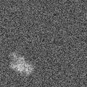

| オプション | 必須項目/選択項目 | 説明 | デフォルト |
|---|---|---|---|
| -i | 必須 | 入力ファイル設定 | NULL |
| -o | 必須 | 出力ファイル設定 | NULL |
| -Nx | 選択 | ｘ軸の幅を設定 | 0 |
| -Ny | 選択 | ｙ軸の幅を設定 | 0 |
| -Nz | 選択 | ｚ軸の幅を設定 | 0 |
| -Cx | 選択 | 設定したｘ軸の幅の開始地点を設定 | 0 |
| -Cy | 選択 | 設定したｙ軸の幅の開始地点を設定 | 0 |
| -Cz | 選択 | 設定したｚ軸の幅の開始地点を設定 | 0 |
| -even | 選択 | 入力ファイルが奇数のサイズで、-Nxなどでサイズ指定されなかったら 奇数を偶数に変更する |
|
| -m | 選択 | モード１ | 0 |
| -M | 選択 | モード２ | 0 |
| -h | 選択 | ヘルプを表示 |
| モード | 説明 |
|---|---|
| 0 | 最短距離法 |
| 1 | 補間法 |
| 2 | 3次補間法 |
| モード | 説明 |
|---|---|
| 0 | ノーマルイメージ |
| 1 | リファレンスイメージ |
| 入力ファイル画像 | 最小 |
-79.707 |
最小 |
-64.5759 |
最小 |
-64.5759 |
最小 |
-64.5759 |
最小 |
-31.66 |
|  | 最小 |
-52.0282 |
最小 |
-31.5983 |